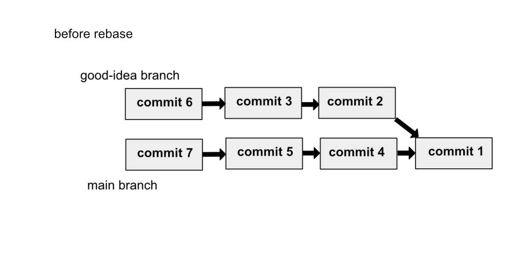
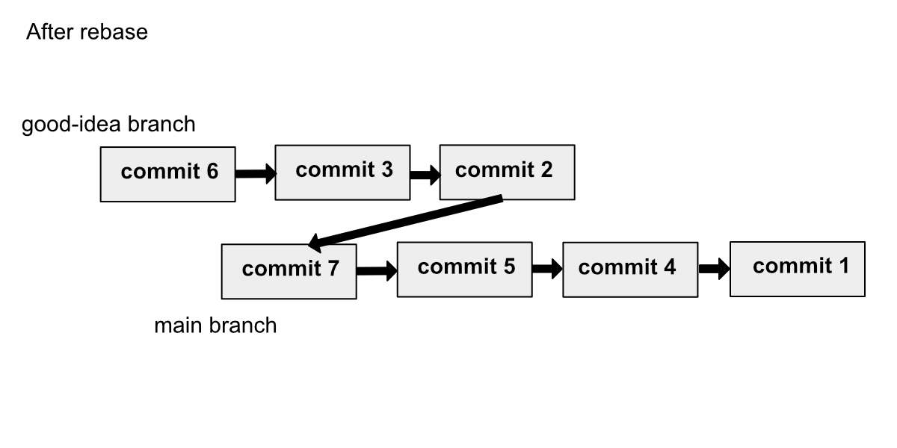

이번 장에서는 git에서 작업을 되돌리는 방법에 대해 배웁니다.
- 변경사항 되돌리기
- staging 취소하기
- commit 변경, 삭제하기
하지만 이런 것들을 배우기 전에 브랜치를 적극적으로 활용해서 작업을 취소할 일이 없도록 합시다. 번거로우니까요.
삭제, 변경된 파일 되돌리기
A.txt이 있다고 치고 A.txt를 삭제해봅시다.
|
|
삭제된 파일을 되돌려봅시다.
위 명령처럼 파일을 checkout 하게 되면 HEAD(현재 작업 중인 브랜치의 가장 최신 커밋)을 참조해 파일을 되돌립니다. 삭제된 파일 뿐만 아니라 파일의 변경 내용을 원래 상태로 되돌릴 때도 쓸 수 있습니다.
reset: staging 취소하기
이미 변경사항을 staging까지 했다면 reset으로 되돌려야 합니다.
reset은 HEAD가 가리키는 commit을 변경하는 명령입니다.
사용법은 --soft와 --mixed, --hard 옵션으로 나누어지는데, default는 --mixed이고, --soft는 여기에선 설명하지 않겠습니다.
git의 reset 명령에 대해 더 자세히 알고 싶은 분들은
reset 명확히 알고 가기
를 참고해주세요.
위 명령은 HEAD와 같은 상태로 staging 된 A.txt를 되돌립니다. 파일의 변경사항은 남아있지만, staging 상태만 해제되는 거죠. 그냥 쉽게 staging만 해제한다고 알아도 됩니다.
파일명을 명시해주지 않으면 모든 파일을 대상으로 reset이 진행됩니다.
--hard: 삭제하고 staging 한 파일 되돌리기
--hard 옵션을 붙이게 되면 현재 상태가 HEAD와 똑같아집니다.
staging만 해제하는 게 아니라 변경사항도 날아갑니다. 위의 경우 삭제했던 파일도 복구되고 staging도 취소되죠.
결과적으로 --hard 옵션은 아래 코드와 같은 효과를 내줍니다.
마찬가지로 파일명을 명시해주지 않으면 모든 파일을 대상으로 reset이 진행됩니다.
commit 수정하기
바로 직전 commit 수정하기
바로 직전 commit에 추가할 파일들을 빼먹은 경우 해당 파일들을 staging 시켜주고 다음 명령을 치면 됩니다.
|
|
Vi에디터로 들어가는데, commit 메시지를 수정해주면 됩니다. commit 메시지만 수정하는 경우에도 위 명령을 실행해주면 됩니다
reset으로 커밋 취소하기
위에서 설명했듯이 reset 명령은 HEAD가 가리키는 commit을 변경해줍니다.
--hard 옵션 없이 reset만 해주면 변경사항은 남고 HEAD가 과거의 commit으로 되돌아가 커밋을 합치는 것과 같은 효과를 낼 수 있습니다.
master의 history가 위와 같은 상태라고 합시다. 이 상태에서 HEAD를 commit 2일 때로 되돌리겠습니다.
변경사항은 남아있지만, HEAD는 commit2를 가리키게 된 것을 볼 수 있습니다.
HEAD 바로 직전의 commit으로 reset 하면 마치 commit 명령을 취소한 것과 같은 효과를 낼 수 있습니다.
|
|
HEAD~[숫자]는 ‘HEAD에서 [숫자]만큼 거슬러 올라간다’라는 의미입니다.
--hard 옵션은 변경사항도 취소해버리기 때문에 앞의 commit들을 없던 commit으로 만들어 버릴 수 있습니다.
rebase: 브랜치 커밋을 최신상태로 업데이트하기
사실 rebase는 작업을 취소하는 명령은 아닙니다.
브랜치 병합
위 글에서 다루듯, 브랜치를 merge 해줄 때 주로 사용합니다. 그럼 rebase는 정확히 뭘 하는 명령일까요?
rebase 명령을 수행하면 브랜치의 시작을 부모 브랜치의 가장 최신 commit에서 시작한 것처럼 바꿔줍니다.  [↑ rebase를 하기 전]  [↑ rebase를 한 뒤]
실수로 master 브랜치를 main 브랜치로 표기했네요. 설명은 master 브랜치로 하겠습니다. 헷갈리지 말아주세요.
언제 rebase 작업을 하게 되는가
부모 브랜치를 최신으로 업데이트 해 주는 경우, 자식 브랜치들 또한 최신으로 업데이트 해주기 위해 사용합니다.
예를 들어, 여러분이 good-idea2 브랜치를 나누어 새로운 기능을 열심히 추가하던 와중, 원격 저장소의 master 브랜치가 갱신되어 새로운 commit들이 추가되었다고 합시다.
여러분은 pull명령을 통해 로컬 master 브랜치를 최신상태로 유지하게 됩니다. 하지만 good-idea2 브랜치는 여전히 이전 상태의 master 브랜치를 기준으로 코드가 작성되어 있습니다. 이 상태에선 good-idea2 브랜치에서 계속 작업을 하더라도 master 브랜치에서 적용할 수 없는 코드가 되어버립니다. 따라서 최신상태의 master 브랜치를 따라 good-idea2 브랜치도 최신상태로 업데이트 해 줘야 합니다.
rebase의 원리: ctrl+c, ctrl+v
사실 rebase는 위 그림처럼 간단하게 가리키는 부모 commit만 바꿔주는 게 아니라, 브랜치를 통째로 복사합니다. 통째로 복사해서 부모 commit이 부모 브랜치의 가장 최신 commit이 되도록 붙여넣고, 기존의 commit들은 삭제해버립니다. 따라서 commit의 hash 값이 바뀝니다.

rebase 충돌
good-idea2 브랜치에선 A.txt 파일을 수정해 ‘rebase test code add’ commit을 만들고 master 브랜치에선 A.txt 파일을 삭제하고 commit을 만들었습니다.
|
|
이런 오류가 뜨면서 rebase가 멈춥니다. HEAD는 이상한 곳을 가리키게 됩니다.
(good-idea2|REBASE 1/1)
위 상황은 master 브랜치의 A.txt 파일은 삭제됐고 good-idea2 브랜치의 A.txt 파일은 여전히 존재해 수정되었기 때문에 충돌이 일어났고 유저에게 선택권을 준겁니다.
- master 브랜치를 따라 파일을 삭제한다.
- good-idea2 브랜치를 따라 파일을 유지하고 수정한다.
오류 내용에서 친절하게 알려주듯이, 유저는 이런 상황에서 3가지 명령을 수행할 수 있습니다.
- 충돌을 해결하고,
git rebase --continue를 수행한다. (충돌을 해결하고 rebase 진행) git rebase --skip: 이 충돌사항은 건너뛴다.git rebase --abort: rebase를 없던 일로 만든다.
충돌을 해결하고 새로운 commit을 만든 뒤, git rebase --continue를 수행하면 다음 충돌사항으로 넘어가거나 rebase를 완료했다고 알려줍니다. 위 상황에선 reset을 통해 삭제된 파일을 되돌려줘야 합니다.
|
|
만일 파일 삭제가 아니라 파일 내부에 코드들이 충돌을 일으킨 경우라면 브랜치 병합 에서 알려준 대로 충돌을 해결하면 됩니다.
git rebase --skip은 충돌을 무시합니다. 이 경우 부모 브랜치의 commit만 유효해집니다. (따라서 위의 경우 A 파일은 삭제됩니다.)
git rebase --abort는 그냥 rebase를 시작했던 것을 후회하며 rebase를 없던 일로 만들어 버립니다.
인터랙티브 rebase
--interactive옵션은 commit을 정리정돈하는 옵션입니다. 삭제, 합치기(squash), 커밋메시지 변경(amend) 등등을 대화형으로 한 번에 처리할 수 있습니다.
위와 같은 history가 존재한다고 합시다.
|
|
323f12e commit을 기준으로 인터랙티브 rebase를 진행합니다.
|
|
위와 같은 장황한 Vi에디터가 나옵니다. 기준 commit(HEAD~5)부터 역순으로 commit이 배치되고, 주석으로 어떻게 바꾸면 될지 알려줍니다. 원하는 대로 pick을 특정 명령으로 바꿔 저장하고 Vi에디터를 빠져나오면 됩니다.
기본적으로는 pick으로 설정되어있으나, 아주 많은 명령이 있지만, 대표적으로 r(reword),e(edit),s(squash),d(drop) 정도만 알아봅시다.
- reword(r): commit 메시지만 변경합니다.
- edit(e): commit을 수정합니다.
- squash(s): commit을 위의 commit과 합칩니다.
- drop(d): commit을 삭제합니다.
edit의 경우, commit의 --amend 옵션과 같습니다. HEAD를 특정 commit으로 돌려 --amend를 할 수 있는 상황으로 만들어줍니다. 그 다음은 변경사항을 추가해 git commit --amend를 진행한 뒤, git rebase --continue로 rebase를 이어나가면 됩니다.
squash는 특정 commit과 그 commit의 위 commit을 합쳐 commit 메시지를 다시 작성하게 합니다. 예를 들어 squash c981984 commit4로 바꾸면 commit3과 commit4를 합치고 commit 메시지를 입력할 Vi에디터를 띄웁니다.
status: 뭘 해야 할지 모를 때
rebase뿐만 아니라 git 작업을 수행 중일 때 이제 무슨 명령을 입력해야 할지, 어디까지 진행됐는지 헷갈린다면 git status 명령을 입력하면 git이 현재 상태와 다음 명령어들을 알려줍니다.
마치며
다음 글에선 병합을 취소하는 revert, reset에 대해 알아보겠습니다.